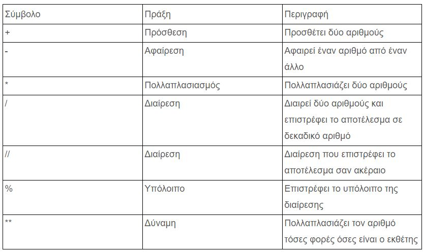

ΔΩΡΕΑΝ ΜΑΘΗΜΑΤΑ PYTHON
Όπως κάθε γλώσσα προγραμματισμού, έτσι
και η Python διαθέτει operators με τους οποίους
μπορούμε να εκτελούμε βασικές αριθμητικές πράξεις.

Ας δούμε όμως ένα απλό πρόγραμμα που μας
δείχνει πως εκτελούνται όλες οι παραπάνω πράξεις
App.py
#Simple program that demonstrates the use of operators
print("Addition with two numbers", 2+2)
print("Subtraction with two numbers", 4-2)
print("Multiplication with two numbers", 2*3)
print("Division with two numbers", 5/2)
print("Integer division with two numbers", 5//2)
print("Remainder of a division", 5%2)
print("Raises a number to a power", 2**5)
Output
Addition with two numbers 4
Subtraction with two numbers 2
Multiplication with two numbers 6
Division with two numbers 2.5
Integer division with two numbers 2
Remainder of a division 1
Raises a number to a power 32
Ελπίζω να έχετε προσέξει ήδη ότι η Python
διαθέτει δύο διαφορετικά σύμβολα για την διαίρεση
– το / και το //. Το αποτέλεσμα από το μονό / περιέχει
και δεκαδικούς αριθμούς οπότε η πράξη 5 / 2 θα μας επιστρέψει
2.5 σαν αποτέλεσμα. Αν όμως χρησιμοποιήσουμε τα διπλά // τότε
θα έχουμε μόνο τον ακέραιο σαν αποτέλεσμα δηλαδή τον αριθμό 2.
Αν τώρα αναρωτιέστε με ποια σειρά θα εκτελεστούν
οι πράξεις όταν υπάρχει συνδυασμός των πιο πάνω
operators στην ίδια γραμμή, η απάντηση είναι απλή
: από τα αριστερά προς τα δεξιά (όπως και στην άλγεβρα)
αλλά ακολουθώντας και την εξής σειρά προτεραιότητας:
- Πρώτα εκτελούντα οι exponentiation operators ( ** )
- Μετά ακολουθούν οι multiplication, division και remainder ( *, / , //, %)
- Τέλος, είναι οι addition και subtraction operators ( +, -)
App.py
print(6 - 3 * 2 + 7 – 1)
Output
6
Αν αυτή η προκαθορισμένη σειρά των πράξεων
σας μπερδεύει, τότε μπορείτε να ελέγξετε εσείς την σειρά
εκτέλεσης των πράξεων με την χρήση των παρενθέσεων. Η πράξη
που βρίσκεται μέσα σε παρένθεση θα εκτελεστεί πρώτη, ανεξάρτητα
από την σειρά προτεραιότητας των operators
App.py
print((6 - 3 ) * ( 2 + 7 ) / 3)
Output
9.0
Ας δούμε ένα πιο ρεαλιστικό παράδειγμα με όλα όσα
έχουμε μάθει στην σημερινή ενότητα. Ας υποθέσουμε
λοιπόν ότι θέλουμε να δημιουργήσουμε μια εφαρμογή
η οποία θα μας ζητάει
- σαν πρώτο βήμα να εισάγουμε την αρχική τιμή ενός προϊόντος,
- σαν δεύτερο βήμα θα υπολογίζει 20% έκπτωση στην αρχική τιμή του προϊόντος,
- σαν τρίτο βήμα να αφαιρεί την έκπτωση από την αρχική τιμή
- και σαν τέταρτο βήμα να μας δείχνει ποια είναι η τελική τιμή του προϊόντος.
App.py
# This program gets an item's original price and
# calculates its sale price, with a 20% discount.
# Get the item's original price.
original_price = float(input("Enter the item's original price: "))
# Calculate the amount of the discount.
discount = original_price * 0.2
# Calculate the sale price.
sale_price = original_price - discount
# Display the sale price.
print('The sale price is', sale_price)
Output
Enter the item's original price: 78
The sale price is 62.4
Ένας από τους operator που είδαμε στον
πρώτο μας παράδειγμα ήταν και ο remainder
( % ) ο οποίος επιστρέφει το υπόλοιπο της
διαίρεσης. Τον συγκεκριμένο operator θα
τον συναντήσουμε πολύ συχνά όταν θέλουμε
να κάνουμε κάποιο είδος μετατροπής σε χρόνο
ή απόσταση ή να ελέγξουμε αν ένας αριθμός
είναι μονός ή ζυγός. Ας δούμε ένα παράδειγμα
που επικεντρώνεται περισσότερο στην χρησιμότητα
του remainder operator. Πιο συγκεκριμένα, ζητάμε
να βρούμε σε πόσες ώρες, λεπτά και δευτερόλεπτα
μπορούμε να διαιρέσουμε έναν αριθμό δευτερολέπτων.
App.py
# Get a number of seconds from the user.
total_seconds = float(input('Enter a number of seconds: '))
# Get the number of hours.
hours = total_seconds // 3600
# Get the number of remaining minutes.
minutes = (total_seconds // 60) % 60
# Get the number of remaining seconds.
seconds = total_seconds % 60
# Display the results.
print('Here is the time in hours, minutes, and seconds:')
print('Hours:', hours)
print('Minutes:', minutes)
print('Seconds:', seconds)
Output
Enter a number of seconds: 4689
Here is the time in hours, minutes, and seconds:
Hours: 1.0
Minutes: 18.0
Seconds: 9.0
Όταν εκτελούμε πράξεις με την Python
υπάρχουν κάποιες αυτόματες μετατροπές που γίνονται.
Υπάρχουν βασικά τρεις κανόνες που ακολουθεί η Python
κάθε φορά που εκτελεί μια αριθμητική πράξη. Οι κανόνες
είναι οι εξής:
- Όταν μια αριθμητική πράξη εκτελείται ανάμεσα σε δύο int τιμές, τότε το αποτέλεσμα θα είναι είδος int
- Όταν μια αριθμητική πράξη εκτελείται ανάμεσα σε δύο float, τότε το αποτέλεσμα θα είναι είδος float.
- Όταν μια αριθμητική πράξη εκτελείται ανάμεσα σε έναν int και ένα float, τότε ο int μετατρέπεται προσωρινά κατά την διάρκεια της πράξης σε float, και το αποτέλεσμα θα είναι είδος float.
Νομίζω οι δύο πρώτοι κανόνες είναι
εύκολο να τους καταλάβετε. Για τον τρίτο κανόνα ας θεωρήσουμε το εξής παράδειγμα:
my_result = 3 * 4.0
Όταν αυτή η πράξη εκτελείται, η τιμή του 3 θα μετατραπεί σε float (3.0) και το αποτέλεσμα του πολλαπλασιασμού
με το 2.0 θα μας επιστρέψει την τελική τιμή 12.0 που είναι float.
Αν τώρα θέλουμε να εφαρμόσουμε εμείς την μετατροπή στην πράξη και να έχουμε τον έλεγχο, τότε μπορούμε να χρησιμοποιήσουμε
είτε το int( ), είτε το float( ) function. Για παράδειγμα:
App.py
first_var = 5.6
final_var = int(first_var)
print("The value of the final_var variable is:",final_var)
Output
The value of the final_var variable is: 5
Αν η αριθμητική πράξη που θέλετε να εκτελέσετε έχει
πολλούς αριθμούς και θέλετε να την χωρίσετε σε 2 ή και
περισσότερες γραμμές για να χωράει στην οθόνη σας, τότε
μπορείτε να χρησιμοποιήσετε το backslash ( \ ) σύμβολο
(ονομάζεται line continuation character) όπως δείχνει
το πιο κάτω παράδειγμα:
App.py
var1 = 5
var2 = 8
var3 = 2
var4 = 4
result = var1 * 7 + var2 * 3 + \
var3 * 4 + var4 * 5
print("The result of this calculation is:", result)
Output
The result of this calculation is: 87
Η χρησιμοποίηση του \ δεν είναι απαραίτητη εφόσον η αριθμητική
πράξη βρίσκεται μέσα σε παρένθεση όπως στην περίπτωση του print( ) function.
App.py
var1 = 5
var2 = 8
var3 = 2
var4 = 4
print(var1 * 7 + var2 * 3
+ var3 * 4 + var4 * 5)
Output
87
Michail Kassapoglou Admin
Γεια σας, είμαι ο Μιχάλης Κασάπογλου και θα σας διδάξω με τον ποιο απλό
τρόπο να προγραμματίζετε σε Python. Ασχολούμαι με την τεχνική εκπαίδευση
σε διάφορες πλατφόρμες, λειτουργικά συστήματα και γλώσσες προγραμματισμού
πάνω από 20 έτη. Κατέχω έναν αρκετά μεγάλο αριθμό πιστοποιήσεων Microsoft και Oracle
και σαν Τraining Lead στην Intrasoft έχω την δυνατότητα να αναβαθμίζω συνεχώς
τις γνώσεις μου και να έχω άμεση επαφή με αληθινά projects και εξειδικευμένες μεθόδους
ανάπτυξης εφαρμογών που έχουν υψηλές απαιτήσεις.
Για τυχόν ερωτήσεις σας μπορείτε να επικοινωνήσετε μαζί μου
στο Michail.Kassapoglou@gmail.com
Σας ευχαριστώ που επισκεφτήκατε την ιστοσελίδα μου.